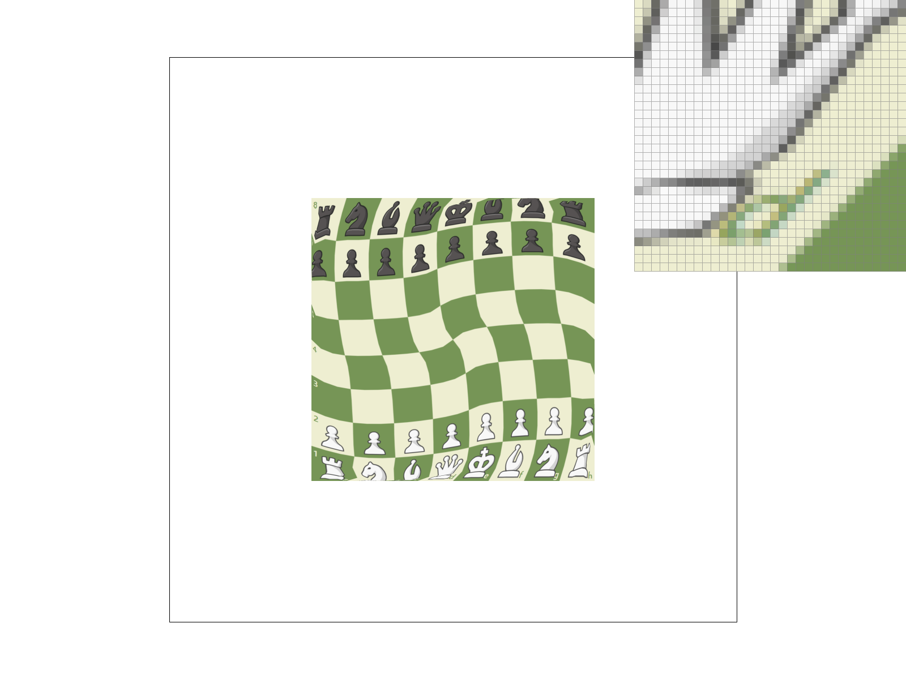
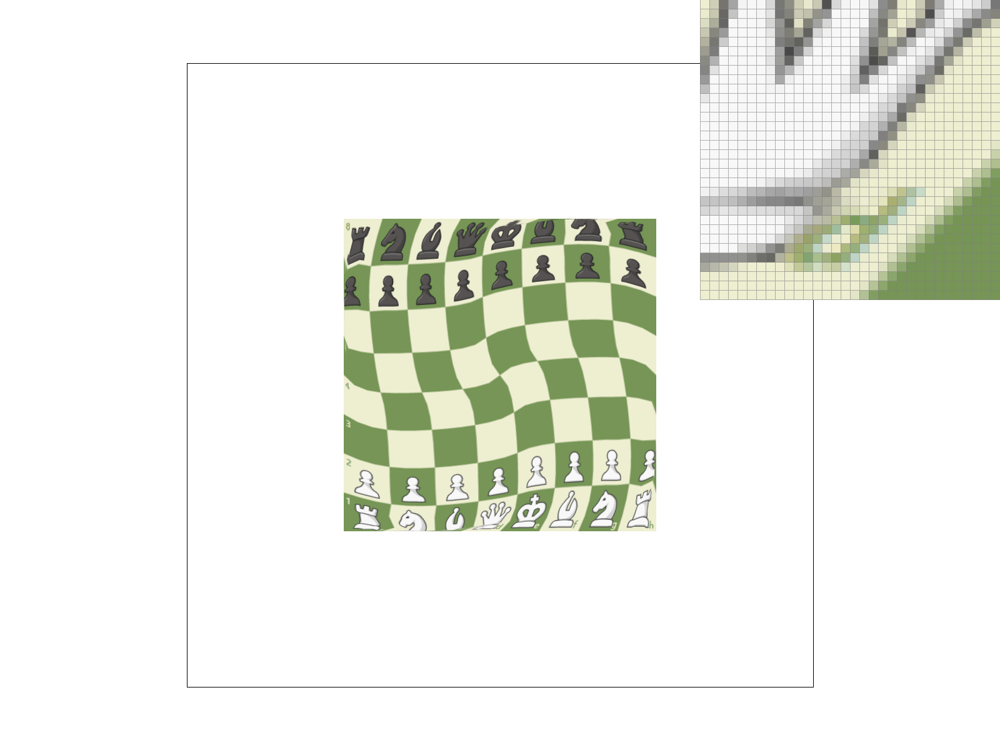

CS184/284A Spring 2025 Homework 1 Write-Up
Names:
Link to webpage: cs184.eecs.berkeley.edu/sp25
Link to GitHub repository: cs184.eecs.berkeley.edu/sp25

Overview
Homework 1Task 1: Drawing Single-Color Triangles
-
How to rasterize.
- The idea is that a triangle covers a pixel if the pixel's center lies in the triangle.
- the pixel center for a pixel at (x,y) = (x+0.5, y+0.5), For each triangle edge, check which side the point lies on.
- By the spec, we only needed to test pixels near the triangle.
- Then, I used the edge lambda function I defined, which told me the orientation.
- Now if all 3 edge values are >= 0 or all 3 are <= 0then we are inside.
- Finally we just call the fill pixel function if that pixel belongs inside the triangle.
-
How the algorithm comapres
- My algorithm only iterates over pixels who lie inside that bounding box because it first computes the triangle’s axis-aligned bounding box.
- It doesn't scan the full framebuffer.
test4.

|
Task 2: Antialiasing by Supersampling
-
Supersampling algorithm and data structures.
I basically changed it so instead of storing one color per pixel, I store a bunch of samples per pixel. I usesample_buffersizedwidth × height × sample_rate. Each pixel gets a √sample_rate by √sample_rate grid of sub samples. When I rasterize a triangle I check every sub-sample spot inside the pixel and if its inside the triangle I write the color into that sub sample slot. -
Why supersampling is useful.
Supersampling helps fix the jagged edges on triangles. With only one sample per pixel its like all or nothing, so edges look stair-steppy. With more samples per pixel you can get partial coverage and when you average them it looks way smoother. -
Modifications to the rasterization pipeline.
I resized the sample buffer whenever the framebuffer size or sample rate changes, updatedrasterize_triangleto loop over sub samples instead of just the center, changedfill_pixelso points and lines just fill every sub sample in that pixel, and then changedresolve_to_framebufferto average all the sub samples into the final color. -
How supersampling antialiases triangles.
For each pixel in the triangle bounding box I test all the sub sample positions with the same edge test. The ones inside get colored, the others stay background. Then at the end I average them together, so edge pixels end up partially filled instead of fully on/off, which is why the triangle edges look smoother.


Task 3: Transforms
1. For this task I just made the robot wave his arm.Task 4: Barycentric Coordinates
-
What barycentric coordinates are.
Barycentric coordinates are basically just weights for the three vertices of a triangle. For any point inside the triangle you get 3 numbers (w0, w1, w2) that add up to 1. If the point is closer to one vertex then that vertex’s weight is bigger. On a vertex its weight is 1 and the other two are 0. -
How I use them for color interpolation.
Each vertex has a color, like red, green, and blue. Then for a point inside the triangle I just do:color = w0*c0 + w1*c1 + w2*c2. So the color smoothly blends depending on where you are. Near the red corner its mostly red, near green its mostly green, etc. -
Image example.
This triangle shows one red, one green, and one blue vertex. You can see how the inside just smoothly blends between them.

Task 5: Pixel sampling for texture mapping
-
What pixel sampling is (in my words).
Pixel sampling is basically: once i know a screen sample is inside the triangle, i map that point to a (u,v) coordinate on the texture, and then i need to decide what color to grab from the texture image. Like uv is usually not landing exactly on a texel, so sampling is just how we pick the final color. -
How I implemented texture mapping.
For each triangle sample (and each subsample when sample_rate > 1), i compute barycentric coords, use those to interpolate the triangle’s (u,v), then i calltex.samplewith mySampleParams. The GUI toggle withPchangespsmso it switches between nearest vs bilinear. Then i write that color into the correct slot insample_bufferand resolve like normal by averaging. -
Nearest vs Bilinear .
- Nearest: just picks the closest texel (one pixel in the texture). it’s fast but it looks blocky, especially when the texture is zoomed in or rotated.
- Bilinear: takes the 4 surrounding texels and blends them. it’s smoother because it doesn’t do those hard jumps between texels.
-
Where bilinear clearly beats nearest.
I looked insvg/texmap/and used the pixel inspector on a spot where the texture is at a slant / shrinking so you get lots of “in-between” uv coords. Nearest looks super chunky there, but bilinear looks way smoother.
Below are the 4 screenshots they asked for (same view / same pixel inspector area):
Comments / differences:
The biggest difference between nearest and bilinear happens when the texture is being
magnified a lot, or it’s at an angle / shrinking so the uv coords land between texels constantly.
Task 6: Level Sampling with mipmaps for texture mapping
Level sampling is just picking which mipmap level to sample from. Like if the texture is getting shrunk a lot on the screen, sampling from the full res image is gonna alias and shimmer because too much detail is getting crammed into one pixel. So mipmaps are just smaller and smaller copies of the same texture, and level sampling is choosing the right sized copy for the current zoom. How I implemented it for texture mapping was: First I built the mipmap pyramid. Level 0 is the original texture. Then each next level is half the width and half the height until it hits 1 by 1. Each mip level is made by downsampling the previous level using a simple average of a 2 by 2 block into one pixel. Then when I sample the texture for a pixel, I compute how “big” the pixel footprint is in texture space using the uv derivatives. The renderer gives me uv for the current sample plus uv for moving one pixel in x and one pixel in y. I use that to estimate how fast u and v are changing across the screen. If uv changes a lot across 1 screen pixel, that means the texture is being minified hard so I should use a higher mip level. If uv changes only a tiny amount, then level 0 is fine. Concretely I do this: I convert the uv step sizes into texel units by multiplying by the texture width and height. Then I take the max of the two step magnitudes as the footprint size. Then level is log base 2 of that footprint. After that I clamp the level to the valid range. For L_ZERO I just force the level to 0 every time. For L_NEAREST I pick the nearest mip level index from the computed level and sample from that mipmap image. After the level is chosen, pixel sampling happens inside that mip level. P_NEAREST grabs the closest texel. P_LINEAR does bilinear interpolation using the 4 surrounding texels.Tradeoffs between pixel sampling, level sampling, and samples per pixel
There are 3 different knobs that affect quality and performance. Pixel samplingP_NEAREST is the fastest because it is one lookup. P_LINEAR is slower because it reads 4 texels and blends them. Memory is basically the same for both. Quality wise P_LINEAR looks smoother up close, but it does not fix the big problem when the texture is zoomed out. It can still shimmer since you are still sampling from a texture that has way too much detail for the pixel. Level sampling
L_ZERO is fastest and uses the least memory because it always samples level 0 and you do not need mipmaps. L_NEAREST is a bit slower because you compute the mip level and you sample from a mipmap. Memory goes up because mipmaps store extra images. It is around one third more memory than the base texture. Quality wise this is the big win for minification. It reduces moiré and that crawling shimmer a lot because you are sampling from a lower detail version that matches the pixel footprint. Number of samples per pixel
More samples per pixel is the slowest because you are doing multiple evaluations per pixel. Like 4 samples per pixel is basically around 4 times the work. Memory can go up a bit depending on implementation, but mostly it is compute expensive. Quality wise it is the strongest overall anti aliasing because it helps both texture aliasing and geometry edge aliasing. It is like brute force averaging. So the vibe is: Pixel sampling helps smooth inside one texture level. Level sampling fixes zoomed out texture aliasing. More samples per pixel gives the best anti aliasing overall but costs the most time.
Four versions using my png and the required combos
I picked a png that has thin lines and sharp high frequency patterns so the differences show up clearly when zooming out. To use my png I copied one of the svg files in svg texmap and changed the texture filename near the top to point to my png. Then I ran ./draw with that svg. For each setting combo I used the S hotkey to save screenshots. What I see in the results: L_ZERO and P_NEAREST looks the worst. was kind of jagged. L_ZERO and P_LINEAR is smoother up close but still shimmers when zoomed out. L_NEAREST and P_NEAREST is way more stable but still kind of crunchy. L_NEAREST and P_LINEAR is the best here. stable and smooth and least moiré. I did a 16 supersampling rate for all.L_ZERO and P_NEAREST
L_ZERO and P_LINEAR
L_NEAREST and P_NEAREST
L_NEAREST and P_LINEAR